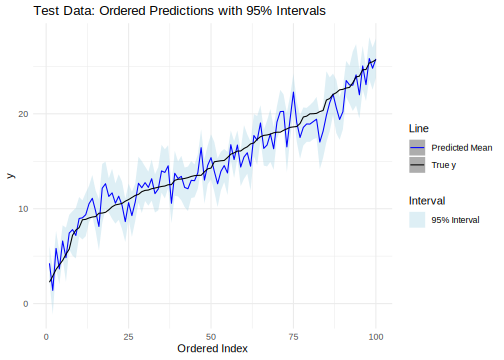
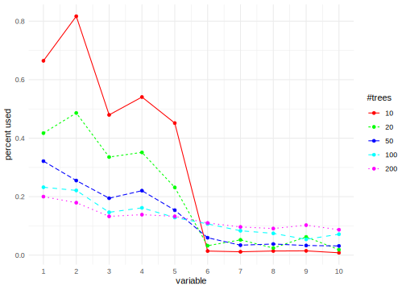
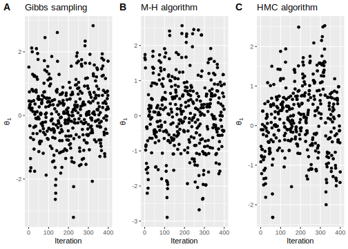

4.2 Hamiltonian Monte Carlo
Hamiltonian Monte Carlo (HMC) was proposed by Duane et al. (1987) and later introduced to the statistical community by Neal (1996). HMC extends the Metropolis algorithm to efficiently explore the parameter space by introducing momentum variables, which help overcome the random walk behavior of Gibbs sampling and the Metropolis-Hastings algorithm. Known also as hybrid Monte Carlo, HMC is particularly advantageous for high-dimensional posterior distributions, as it reduces the risk of getting stuck in local modes and significantly improves mixing (Neal 2011).
However, HMC is designed to work with strictly positive target densities. Therefore, transformations are required to handle bounded parameters, such as variances and proportions. For example, logarithmic and logit transformations can be applied. These transformations necessitate the use of the change-of-variable theorem to compute the log posterior density and its gradient, which are essential for implementing the HMC algorithm.
HMC leverages concepts from physics, specifically Hamiltonian mechanics, to propose transitions in the Markov chain. In Hamiltonian mechanics, two key variables define the total energy of the system: the position (\(\boldsymbol{\theta}\)) and the momentum (\(\boldsymbol{\delta}\)). The Hamiltonian represents the total energy of the system, consisting of potential energy (energy due to position) and kinetic energy (energy associated with motion). The objective is to identify trajectories that preserve the system’s total energy, meaning the Hamiltonian remains invariant, while avoiding trajectories that do not. This approach enhances the acceptance rate of proposed transitions.
To implement HMC, we solve the differential equations derived from the Hamiltonian, which involve derivatives with respect to position and momentum. However, these equations rarely have analytical solutions, requiring numerical methods for approximation. This necessitates discretizing Hamilton’s equations, which introduces errors. To mitigate these errors, HMC uses the leapfrog integrator, a numerical method with smaller errors compared to simpler approaches like the Euler method.
HMC uses a momentum variable (\(\delta_k\)) for each \(\theta_k\), so that the transition kernel of \(\boldsymbol{\theta}\) is determined by \(\boldsymbol{\delta}\). Both vectors are updated using a Metropolis algorithm at each stage such that the distribution of \(\boldsymbol{\theta}\) remains invariant (Neal 2011). The joint density in HMC is given by \(p(\boldsymbol{\theta}, \boldsymbol{\delta} \mid \boldsymbol{y}) = \pi(\boldsymbol{\theta} \mid \boldsymbol{y}) \times p(\boldsymbol{\delta})\), where \(\boldsymbol{\delta} \sim N(\boldsymbol{0}, \boldsymbol{M})\), and \(\boldsymbol{M}\) is a diagonal matrix such that \(\delta_k \sim N(0, M_{kk})\).
Algorithm 3 outlines the HMC implementation. The gradient vector \(\frac{d \log(\pi(\boldsymbol{\theta} \mid \boldsymbol{y}))}{d \boldsymbol{\theta}}\) must be computed analytically, as using finite differences can be computationally expensive. However, it is advisable to verify the analytical calculations by evaluating the gradient at the maximum posterior estimate, where the function should return values close to 0, or by comparing results with finite differences at a few points.
Set θ(0) in the support of π(θ|y), and set step size ε, number of leapfrog steps L, and total iterations S
Draw δ(0) from N(0, M)
For s=1,2,...,S do
For l=1,2,...,L do
if l=1 then
δc ← δ(s-1) + 0.5 ε dlog(π(θ|y))/dθ
θc ← θ(s-1) + ε M-1 δc
else
if l=2,...,L-1 then
δc ← δc + ε dlog(π(θ|y))/dθ
θc ← θc + ε M-1 δc
else
δc ← δc + 0.5 ε dlog(π(θ|y))/dθ
θc ← θc + ε M-1 δc
end if
end if
end for
Calculate α([θ, δ](s-1),[θ, δ]c)=min((p(δc)π(θc|y))/(p(δ(s-1))π(θ(s-1)|y)),1)
Draw U from U(0,1)
θ(s)= θc if U < α([θ, δ](s-1),[θ, δ]c)
θ(s)= θ(s-1) otherwise
End for
Note that HMC does not require the marginal likelihood, as neither the gradient vector \(\frac{d \log(\pi(\boldsymbol{\theta} \mid \boldsymbol{y}))}{d \boldsymbol{\theta}}\) nor the acceptance rate depend on it. That is, we can use only \(\pi(\boldsymbol{\theta}) \times p(\boldsymbol{y} \mid \boldsymbol{\theta})\) to implement HMC. In addition, we do not retain \(\boldsymbol{\delta}\) after it is updated at the beginning of each iteration, as it is not required subsequently. To begin, the step size (\(\epsilon\)) can be drawn randomly from a uniform distribution between 0 and \(2\epsilon_0\), and the number of leapfrog steps (\(L\)) is set as the largest integer near \(1/\epsilon\), ensuring \(\epsilon \times L \approx 1\). We need to set \(\boldsymbol{M}\) to be the inverse of the posterior covariance matrix evaluated at the maximum a posteriori estimate under this setting.
The acceptance rate should be checked, with the optimal rate around 65% (Gelman et al. 2021). If the acceptance rate is much higher than 65%, increase \(\epsilon_0\); if it is much lower, decrease it. This strategy may not always work, and alternative strategies can be tested, such as setting \(\boldsymbol{M} = \boldsymbol{I}\) and fine-tuning \(\epsilon\) and \(L\) to achieve an acceptance rate near 65%. Finally, the number of iterations (\(S\)) is chosen to ensure convergence to the stationary distribution.
Example: Sampling from a bi-variate Gaussian distribution
As a toy example, let’s compare the Gibbs sampling, M-H, and HMC algorithms when the posterior distribution is a bi-variate Gaussian distribution with mean \(\boldsymbol{0}\) and covariance matrix \(\boldsymbol{\Sigma} = \begin{bmatrix} 1 & \rho \\ \rho & 1 \end{bmatrix}\). Let’s set \(\rho = 0.98\).
The Gibbs sampler requires the conditional posterior distributions, which in this case are \(\theta_1 \mid \theta_2 \sim N(\rho \theta_2, 1 - \rho^2)\) and \(\theta_2 \mid \theta_1 \sim N(\rho \theta_1, 1 - \rho^2)\). We use the random walk proposal distribution for the M-H algorithm, where \(\boldsymbol{\theta}^c \sim N(\boldsymbol{\theta}^{(s-1)}, \text{diag}\left\{0.18^2\right\})\). We set \(\epsilon = 0.05\), \(L = 20\), and \(\boldsymbol{M} = \boldsymbol{I}_2\) for the HMC algorithm, and given that \(\pi(\boldsymbol{\theta} \mid \boldsymbol{y}) \propto \exp\left\{-\frac{1}{2} \boldsymbol{\theta}^{\top} \boldsymbol{\Sigma}^{-1} \boldsymbol{\theta}\right\}\), then \(\frac{d \log(\pi(\boldsymbol{\theta} \mid \boldsymbol{y}))}{d \boldsymbol{\theta}} = -\boldsymbol{\Sigma}^{-1} \boldsymbol{\theta}\).
The following code shows how to implement the Gibbs sampler, the random walk M-H algorithm, and the HMC in this example such that the effective number of posterior draws is 400.
rm(list = ls()); set.seed(010101)
# Gibbs sampler
Gibbs <- function(theta, rho){
thetal <- rnorm(1, mean = rho*theta, sd = (1- rho^2)^0.5)
return(thetal)
}
# Metropolis-Hastings
MH <- function(theta, rho, sig2){
SIGMA <- matrix(c(1, rho, rho, 1), 2, 2)
SIGMAc <- matrix(c(1, sig2, sig2, 1), 2, 2)
thetac <- MASS::mvrnorm(1, mu = theta, Sigma = SIGMAc)
a <- mvtnorm::dmvnorm(thetac, c(0, 0), SIGMA)/mvtnorm::dmvnorm(theta, c(0, 0), SIGMA)
U <- runif(1)
if(U <= a){
theta <- thetac
accept <- 1
}else{
theta <- theta
accept <- 0
}
return(list(theta = theta, accept = accept))
}
# Hamiltonian Monte Carlo
HMC <- function(theta, rho, epsilon, M){
SIGMA <- matrix(c(1, rho, rho, 1), 2, 2)
L <- ceiling(1/epsilon)
Minv <- solve(M); thetat <- theta
K <- length(thetat)
mom <- t(mvtnorm::rmvnorm(1, rep(0, K), M))
logPost_Mom_t <- mvtnorm::dmvnorm(t(theta), rep(0, K), SIGMA, log = TRUE) + mvtnorm::dmvnorm(t(mom), rep(0, K), M, log = TRUE)
for(l in 1:L){
if(l == 1 | l == L){
mom <- mom + 0.5*epsilon*(-solve(SIGMA)%*%theta)
theta <- theta + epsilon*Minv%*%mom
}else{
mom <- mom + epsilon*(-solve(SIGMA)%*%theta)
theta <- theta + epsilon*Minv%*%mom
}
}
logPost_Mom_star <- mvtnorm::dmvnorm(t(theta), rep(0, K), SIGMA, log = TRUE) + mvtnorm::dmvnorm(t(mom), rep(0, K), M, log = TRUE)
alpha <- min(1, exp(logPost_Mom_star-logPost_Mom_t))
u <- runif(1)
if(u <= alpha){
thetaNew <- c(theta)
}else{
thetaNew <- thetat
}
rest <- list(theta = thetaNew, Prob = alpha)
return(rest)
}
# Hyperparameters
rho <- 0.98; sig2 <- 0.18^2
# Posterior draws Gibbs and M-H
S <- 8000; thin <- 20; K <- 2
thetaPostGibbs <- matrix(NA, S, K)
thetaPostMH <- matrix(NA, S, K)
AcceptMH <- rep(NA, S)
thetaGibbs <- c(-2, 3); thetaMH <- c(-2, 3)
for(s in 1:S){
theta1 <- Gibbs(thetaGibbs[2], rho)
theta2 <- Gibbs(theta1, rho)
thetaGibbs <- c(theta1, theta2)
ResMH <- MH(thetaMH, rho, sig2)
thetaMH <- ResMH$theta
thetaPostGibbs[s,] <- thetaGibbs
thetaPostMH[s,] <- thetaMH
AcceptMH[s] <- ResMH$accept
}
keep <- seq(0, S, thin)
mean(AcceptMH[keep[-1]])## [1] 0.165##
## Iterations = 1:400
## Thinning interval = 1
## Number of chains = 1
## Sample size per chain = 400
##
## 1. Empirical mean and standard deviation for each variable,
## plus standard error of the mean:
##
## Mean SD Naive SE Time-series SE
## [1,] 0.09561 0.9230 0.04615 0.06976
## [2,] 0.09338 0.9258 0.04629 0.07029
##
## 2. Quantiles for each variable:
##
## 2.5% 25% 50% 75% 97.5%
## var1 -1.748 -0.4606 0.07596 0.6520 1.937
## var2 -1.652 -0.5319 0.10553 0.6702 1.881


# Posterior draws HMC
S <- 400;epsilon <- 0.05; L <- ceiling(1/epsilon); M <- diag(2)
thetaPostHMC <- matrix(NA, S, K)
ProbAcceptHMC <- rep(NA, S)
thetaHMC <- c(-2, 3)
for(s in 1:S){
ResHMC <- HMC(theta = thetaHMC, rho, epsilon, M)
thetaHMC <- ResHMC$theta
thetaPostHMC[s,] <- thetaHMC
ProbAcceptHMC[s] <- ResHMC$Prob
}
thetaPostHMCMCMC <- coda::mcmc(thetaPostHMC)
plot(thetaPostHMCMCMC); coda::autocorr.plot(thetaPostHMCMCMC)
## Min. 1st Qu. Median Mean 3rd Qu. Max.
## 0.2422 0.8005 0.9705 0.8747 1.0000 1.0000#Figure
df <- as.data.frame(cbind(1:S, thetaPostHMC[,1], thetaPostMH[keep[-1],1], thetaPostGibbs[keep[-1],1]))
colnames(df) <- c("Iter", "HMC", "MH", "Gibbs")
library(latex2exp); library(ggpubr)## Loading required package: ggplot2## Warning: package 'ggplot2' was built under R version 4.3.3g1 <- ggplot(df, aes(x= Iter)) + geom_point(aes(y=HMC), colour="black") + labs(x = "Iteration", y = TeX("$\\theta_{1}$"), title = "HMC algorithm")
g2 <- ggplot(df, aes(x= Iter)) + geom_point(aes(y=MH), colour="black") + labs(x = "Iteration", y = TeX("$\\theta_{1}$"), title = "M-H algorithm")
g3 <- ggplot(df, aes(x= Iter)) + geom_point(aes(y=Gibbs), colour="black") + labs(x = "Iteration", y = TeX("$\\theta_{1}$"), title = "Gibbs sampling")
ggarrange(g3, g2, g1, labels = c("A", "B", "C"), ncol = 3, nrow = 1)
The figure shows the posterior draws of \(\theta_1\) using the Gibbs sampler (Panel A, left), the Metropolis-Hastings algorithm (Panel B, middle), and the Hamiltonian Monte Carlo (Panel C, right). The convergence diagnostic plots (no shown) suggests that the three algorithms perform a good job. Although, the acceptance rate in HMC is higher than the M-H due to the HMC producing larger changes in \(\boldsymbol{\theta}\) than a corresponding number of random-walk M-H iterations (Neal 2011).